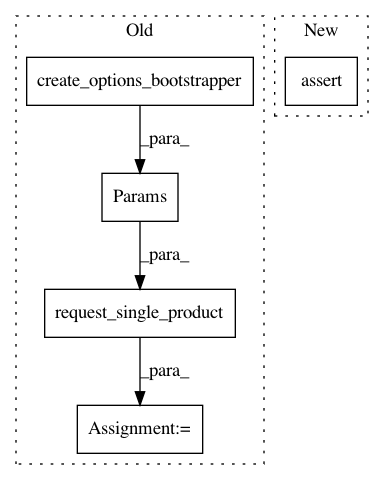

9516dff4df4a1af55be1c456fc45783357c582f6,src/python/pants/backend/python/rules/python_sources_test.py,UnstrippedPythonSourcesTest,test_filters_out_irrelevant_targets,#UnstrippedPythonSourcesTest#,157
Before Change
parent_directory="src/python", files=["j.java"], target_cls=NonPythonTarget
),
]
bootstrapper = create_options_bootstrapper()
with_resources = self.request_single_product(
UnstrippedPythonSources,
Params(UnstrippedPythonSourcesRequest(targets, include_resources=True), bootstrapper),
)
assert with_resources.snapshot.files == (
"src/python/f.txt",
"src/python/p.py",
"src/python/r.txt",
)
without_resources = self.request_single_product(
UnstrippedPythonSources,
Params(UnstrippedPythonSourcesRequest(targets, include_resources=False), bootstrapper),
)
assert without_resources.snapshot.files == ("src/python/p.py",)
After Change
include_files=False,
expected=["src/python/p.py", "src/python/r.txt"],
)
assert_has_files(
include_resources=False,
include_files=True,
expected=["src/python/f.txt", "src/python/p.py"],
)
assert_has_files(include_resources=False, include_files=False, expected=["src/python/p.py"])
In pattern: SUPERPATTERN
Frequency: 5
Non-data size: 5
Instances
Project Name: pantsbuild/pants
Commit Name: 9516dff4df4a1af55be1c456fc45783357c582f6
Time: 2020-06-25
Author: 14852634+Eric-Arellano@users.noreply.github.com
File Name: src/python/pants/backend/python/rules/python_sources_test.py
Class Name: UnstrippedPythonSourcesTest
Method Name: test_filters_out_irrelevant_targets
Project Name: pantsbuild/pants
Commit Name: 9516dff4df4a1af55be1c456fc45783357c582f6
Time: 2020-06-25
Author: 14852634+Eric-Arellano@users.noreply.github.com
File Name: src/python/pants/backend/python/rules/python_sources_test.py
Class Name: StrippedPythonSourcesTest
Method Name: test_filters_out_irrelevant_targets
Project Name: pantsbuild/pants
Commit Name: ddee4ac4fa7a0affafe35bbcdc36d499dd2f0334
Time: 2020-08-07
Author: 14852634+Eric-Arellano@users.noreply.github.com
File Name: src/python/pants/engine/internals/graph_test.py
Class Name: TestSpecsToAddresses
Method Name: test_filesystem_specs_nonexistent_file
Project Name: pantsbuild/pants
Commit Name: ddee4ac4fa7a0affafe35bbcdc36d499dd2f0334
Time: 2020-08-07
Author: 14852634+Eric-Arellano@users.noreply.github.com
File Name: src/python/pants/engine/internals/graph_test.py
Class Name: TestSpecsToAddresses
Method Name: test_filesystem_specs_no_owner
Project Name: pantsbuild/pants
Commit Name: 145ad80084a35ea06786933131a9834625f515de
Time: 2020-07-15
Author: 14852634+Eric-Arellano@users.noreply.github.com
File Name: src/python/pants/engine/internals/graph_test.py
Class Name: TestDependencies
Method Name: test_dependency_inference